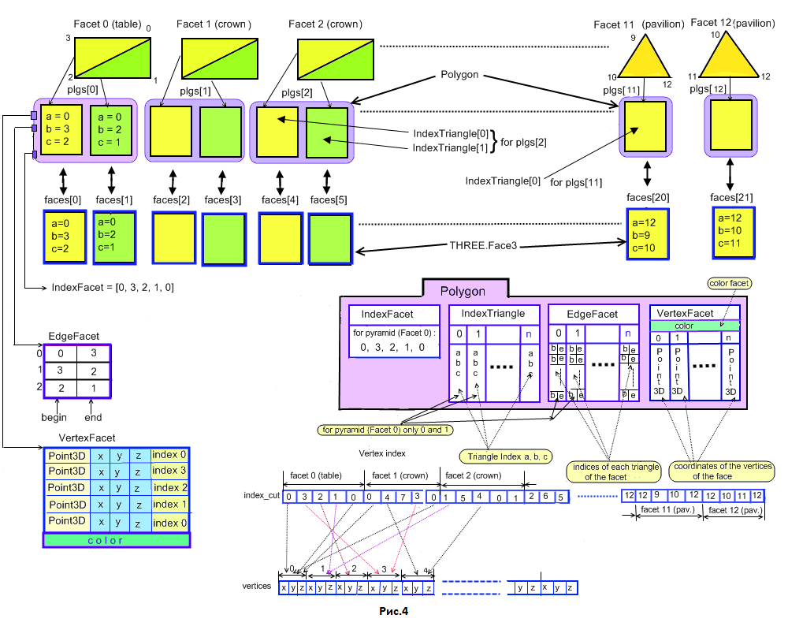

В данной главе мы создадим нашу первую модель трехмерного объекта. Эта модель выпуклого многогранника по внешнему виду похожего на перевернутую пирамиду. Поэтому дадим этому многограннику название пирамида. Создаваемая модель пипамиды будет иметь следующий внешний вид.
Программа созданная с помощью библиотеки three.js для отображения модели пирамиды:
Из программы хорошо видно, что модель многогранника пирамиды условно можно разделить на три части – верхнюю, среднюю и нижнюю. Так как в дальнейшем мы будем создавать модели многогранников представляющих собой ограненные драгоценные или поделочные камни, то для обозначения составных частей создаваемых многогранников (такие ограненные камни обычно называют огранками) будем придерживаться соответствующей терминологии принятой для огранок.
Верхняя часть многогранника (огранки) называется короной (crown) . Горизонтальная плоскость, ограничивающая корону сверху, носит название площадка (table). Средняя часть многогранника называется рундистом (girdle) и имеет вид пояса обернутого вокруг многогранника. Нижняя часть многогранника называется павильоном (pavilion). Самая нижняя вершина павильона, где его грани сведены в точку, называется шипом. Если часть павильона, примыкающая к шипу, ограничена плоскостью, проходящей параллельно площадке короны, то вместо шипа получится грань, называемая калеттой (culet). В этом случае точку пересечения плоскостей, в которых расположены грани павильона будем называть виртуальной калеттой или виртуальным шипом многогранника (огранки). В дальнейшем для простоты, вне зависимости от того, что мы имеем в нижней части павильона – шип или калетту, мы будем обычно называть эту часть многогранника для единообразия калеттой. Заметим, что калетту в виде грани делают лишь для того, чтобы уберечь многогранник от сколов при полировке или закрепке в ювелирное изделие. В большинстве типов огранок, за исключением, может быть, классического бриллианта и огранки выполненной в форме сердца, чаще всего калетта стачивается до точки и, тем самым, устраняется ее видимость.
Три названные выше части многогранника – корона, рундист и павильон – присутствуют и в подавляющем большинстве огранок имеющих другой внешний вид. Исключением является многогранник, называемый бриолетом, в которой нельзя очевидным образом выделить части подобные короне, рундисту или павильону.
Перейдем непосредственно к построеню модели прамиды. Прежде всего необходимо пронумеровать ее вершины. Для этого воспользуемся ее проволочным рисунком с нанесенным на него номерами - назовем их индексами вершин (рис.1).

Введем декартову систему координат, в которой будем создавать модель многогранника. Начало системы координат поместим в точке пересечения прямой соединяющей вершины 6 и 8 с прямой соединяющей вершины 5 и 11 многогранника. Таким образом, точка начала координат окажется расположенной в центре прямоугольника, который образован четырьмя гранями рундиста. Оси OX, OY и OZ направим так, как показано на следующем рисунке. Заметим, что направление осей не совпадает с направлением осей в OpenGL и WebGL. При построении моделей нам удобно расположить модель по длине вдоль оси X, по ширине - вдоль оси Y, а по высоте - по оси Z. Таким образом, отображение модели на экран производится в системе координат принятых в WebGL, но непосредственно сам расчет вершин модели происходит в системе координат, показанной на рисунке 1. Нумерация вершин показана также на рис.2. На рисунке 2 отдельно показана нумерация вершин короны и павильона, если смотреть на корону сверху, а на павильон снизу. Однако, очень часто, для того чтобы положение вершин павильона было легче сопоставить с положением вершин короны, павильон на рисунках будет показан как будто мы смотрим на него сверху находясь при этом внутри многогранника.
Кроме нумерации всех вершин при построении модели многогранника необходимо знать, как индексы вершин
соотносятся с гранями многогранника. Для этой цели в программе, представляющей многогранник, заводится специальный
массив описывающий его топологию. В этот массив входит каждая грань модели,
которая представлена номерами вершин, эту грань образующую. В дальнейшем будем придерживаться следующих правил:
При нумерации (перечислении) последовательности вершин, образующих грань, направление обхода вершин
происходит против часовой стрелки, если мы смотрим на многогранник снаружи.
Если же наблюдатель находится внутри многогранника , то обход вершин граней для него должен происходить
по часовой стрелке.
Из последовательностей пронумерованных вершин образются грани модели. Дублированная первая вершина грани
сигнализирует о том, что грань закончилась. Нумерация (индексы) вершин хранится в массиве index_cut.
В дальнейшем во всех моделях многогранников самой первой в массив будем помещать грань его площадки.
Поэтому грань 0-3-2-1-0 в массиве index_cut расположена в начале.
var index_cut = [ // Площадка многогранника (самая верхняя грань модели) // Смотрим на модель сверху. // В пределах видимости находится площадка и грани короны. // Обход вершин площадки против часовой стрелки. 0, 3, 2, 1, 0, // грань 0 // Корона (верхняя часть модели) // Смотрим на модель многогранника сверху. // В пределах видимости наодится площадка и грани короны. // Обход вершин граней короны против часовой стрелки. 0, 4, 7, 3, 0, // грань 1 1, 5, 4, 0, 1, // грань 2 2, 6, 5, 1, 2, // грань 3 3, 7, 6, 2, 3, // грань 4 // Рундист (средняя часть модели) 4, 8, 11, 7, 4, // грань 5 5, 9, 8, 4, 5, // грань 6 6, 10, 9, 5, 6, // грань 7 7, 11, 10, 6, 7, // грань 8 // Павильон (нижняя часть модели) // Если посмотреть на модель многогранника снизу то то обход вершин граней // павильона проводится также против часовой стрелки. 12, 11, 8, 12, // грань 9 12, 8, 9, 12, // грань 10 12, 9, 10, 12, // грань 11 12, 10, 11, 12, // грань 12 // Признак того, что граней больше нет. -100 ];
Массив index_cut полностью описывает структуру модели в плане взаимосвязи ее вершин и граней.
Можно сказать, что при помощи этого массива мы задали топологию многогранника. Многогранник состоит из 13
граней и 13 вершин. Этот массив дальнейшем будет использован при отображении модели на экране дисплея.
Трехмерные моделели объектов можно условно разбить на две группы.
К первой можно отнести модели объектов, которые имеют полностью регулярную единую структуру и которые нельзя разбить на несколько отдельных частей. Ярким примером таких объектов являются платоновы тела, которые являются выпуклыми многогранниками, состоящими из одинаковых правильных многоугольников и обладающих пространственной симметрией. К платоновым телам относятся куб, тетраэдр, октаэдр, додекаэдр и икосаэдр. Координаты всех вершин моделей этих многоранников рассчитываются по жестким законам - нельзя, например, произвольно изменить угол наклона какой либо грани в платоновом многограннике, так как это нарушит его симметрию и, следовательно, объект перестанет быть платоновым телом. Но не только платоновы тела можно отнести к первой группе 3D-объектов. На сайте Polyhedra Viewer представлено большое количество многогранников, которые имеют структуру которую нельзя разбить на несколько отдельных частей.
Ко второй группе отнесятся объекты, которые условно можно разделить на несколько частей. К этому классу можно отнести подавляющее число объектов - модели зданий (фундамент, стены, крыша), машин, мебели и т.д. К примеру, изменяя произвольно (в определенных пределах) координаты вершин и углы наклона граней крыши у здания мы опять получим здание но с несколько иным внешним видом.
Модели огранок драгоценных и поделочных камней обычно состоят из трех частей - короны, рундиста и павильона.
Допускается изменять форму любой из этих частей с целью получения максимальной красоты многогранника.
(Исключение представляет модель огранки бриолет, в которой нет деления на три части.)
Расчет координат вершин короны, рундиста и павильона можно производить независимо.
Поэтому удобно ввести дополнительную отдельную нумерацию вершин для этих трех составных частей многогранника.
Использовать отдельные массивы для хранения координат вершин отдельных частей многогранника, для программиста
гораздо удобнее, чем использовать единый массив для всех его вершин. Для модели пирамиды в которой
всего тринадцать вершин это не актуально, но для многогранников в которых несколько десятков и даже сотен
вершин отдельная нумерация делает расчет более наглядным.
Для обозначения граней моделей, построением которых мы будем заниматься, условимся использовать в дальнейшем
заглавные и (для павильонов некоторых моделей) прописные буквы латинского алфавита.
На рисунке 2 черным цветом показана сквозная нумерация вершин
модели. Синим цветом пронумерованы вершины принадлежащие рундисту, а красным -
короне и павильону. В программе, выполняющей построение модели многогранника, для каждой из трех ее частей заведем
отдельный вспомогательный массив, предназначенный для хранения координат вершин соответствующей части модели.
В дальнейшем будем называть эти массивы как crown, girdle
и pavil. Для пирамиды массив crown содержит четыре элемента, массив girdle - восемь,
а массив pavil содержит всего один элемент. Каждый элемент, входящий в эти массивы,
содержит значения трех нормированных на ширину многогранника значений x, y и z, которые являются координатами
соответствующей вершины многогранника (ширина моделей принимается равной 1).
Указанные три массива являются необязательными и вводятся только для удобства при написании программы.
В online-программе находящейся в данной главе сквозную нумерацию всех вершин можно увидеть поставив галочку в поле enumeration находящимся в dat.GUI (там где задаются значения параметров модели). При наведении курсора мыши на любую грань модели появится поле обозначенное как "(x, y, z) = " в котором будут выведены соответствующие координаты точки находящейся на поверхности модели на этой грани.
На втором этапе мы можем раскрасить грани модели. Этот этап не является обязательным, если раскраска нам не нужна.
Предположим, что мы хотим раскрасить грани так, как показано на рисунках приведенных выше на странице сайта.
С этой целью создается следующая функция
facet_colors(), которая осуществляет запись цветов всех граней в массив colors.
function facet_colors()
{
var ind = 0;
// table
colors[ind] = new THREE.Color("rgb(200, 200, 200)"); // 0, 3, 2, 1, 0, грань 0
ind++;
// crown
colors[ind] = new THREE.Color("rgb(250, 190, 190)"); // 0, 4, 7, 3, 0, грань 1
ind++;
colors[ind] = new THREE.Color("rgb(190, 250, 190)"); // 1, 5, 4, 0, 1, грань 2
ind++;
colors[ind] = new THREE.Color("rgb(190, 190, 250)"); // 2, 6, 5, 1, 2, грань 3
ind++;
colors[ind] = new THREE.Color("rgb(150, 250, 250)"); // 3, 7, 6, 2, 3, грань 4
ind++;
// girdle
colors[ind] = new THREE.Color("rgb(200, 200, 200)"); // 4, 8, 11, 7, 4, грань 5
ind++;
colors[ind] = new THREE.Color("rgb(170, 170, 170)"); // 5, 9, 8, 4, 5, грань 6
ind++;
colors[ind] = new THREE.Color("rgb(200, 200, 200)"); // 6, 10, 9, 5, 6, грань 7
ind++;
colors[ind] = new THREE.Color("rgb(170, 170, 170)"); // 7, 11, 10, 6, 7, грань 8
ind++;
// pavilion
colors[ind] = new THREE.Color("rgb(250, 190, 190)"); // 12, 11, 8, 12, грань 9
ind++;
colors[ind] = new THREE.Color("rgb(190, 250, 190)"); // 12, 8, 9, 12, грань 10
ind++;
colors[ind] = new THREE.Color("rgb(190, 190, 250)"); // 12, 9, 10, 12, грань 11
ind++;
colors[ind] = new THREE.Color("rgb(150, 250, 250)"); // 12, 10, 11, 12, грань 12
};
После того как пронумерованы все вершины и записаны последовательности обхода всех вершин граней, необходимо задать параметры модели и затем произвести расчет координат всех ее вершин. Для того чтобы построить 3D-объекта требуется знать значения координат вершин объекта в пространстве. Самым простым способом было бы задание массива всех координат вершин объекта напрямую – каждой вершине поставить в соответствие значения трех пространственных координат. Однако такой способ хорош для объекта, который имеет заранее определенную форму. При таком способе можно было бы пропорционально, с помощью масштабирования, изменять размер всего объекта и, даже, попробовать изменить размер объекта отдельно по каждой координатной оси. Но этот способ не позволяет изменять соотношения размеров отдельных частей объекта или задавать угловые размеры, присутствующие в объекте и определяющие его форму. Иными словами он не позволяет динамически изменять размеры и внешний вид объекта (в данном случае многогранника) в пределах его топологии.
Поэтому поступим иначе. Для каждого 3D-объекта можно определить набор некоторых характерных для него размеров (параметров), которые определяют его форму. Параметры могут определять либо линейные, либо угловые размеры частей объекта или объекта в целом. Набор параметров можно почти всегда определить не единственным способом. Обычно, чем сложнее объект (в данном случае многогранник), тем больше имеется способов задать его форму при помощи различных видов параметризации. Набор параметров для многогранника обычно выбирается исходя не только из требования, создать нужную форму многогранника, но и из того, чтобы его модель могла взаимодействовать соответствующим образом с программой, с которой она будет совместно работать. На рисунке 2 приведен вид модели сверху на корону, снизу на павильон и сбоку на всю 3D-модель пирамиды с нанесенными на чертежи размерами определяющими ее форму. Сделаем несколько предварительных замечаний.
Как для рассматриваемой модели пирамида, так для всех других многогранников, которые мы будем рассматривать в дальнейшем, размеры всех линейных элементов многогранника мы будем рассчитывать в единицах измерения отнесенных к какому-либо характерному размеру многогранника. Наиболее часто в качестве такого размера выступает ширина многогранника (огранки), выраженная в абсолютных единицах измерения. Для модели пирамиды такими единицами измерения будут, например, миллиметры. Для моделей объектов отличных от огранок (например зданий) это могут быть метры, сантиметры и т.д. Но некоторые параметры моделей многогранников могут задаваться в единицах измерения отнесенных к высоте короны или глубине павильона. Для павильона будем использовать в дальнейшем термин "глубина", так как "нулевой" уровень - плоскость OXY проходит через середину рундиста. Корона расположена выше этого уровня, а павильон - ниже.
Назовем шириной или главным (первым) диаметром многогранника (model_width)
размер в том его месте, где производится измерение этой ширины. Обычно многогранник, относительно
системы координат, в которой осуществляется его построение, расположен таким образом, что направление прямой,
вдоль которой измеряется его главный диаметр, совпадает с осью OY. Если посмотреть на вышеприведенные
рисунки, то как нетрудно заметить, это будет кратчайшее расстояние между ребрами образованными
верхними вершинами рундиста 0, 3 - 1-2.
Или то же самое расстояние для нижних вершин рундиста
между ребрами 4-7 и 5-6.
Будем считать, что ширина многогранника в относительных единицах всегда равна
1.0. Для того чтобы перейти от относительных единиц измерения размеров элементов многогранника
к их абсолютным значениям требуется умножить величину какого-либо его элемента,
заданного в относительных единицах измерения, на абсолютное значение ширины многогранника.
Ширина многогранника в абсолютных единицах равна (model_width · 1.0).
Если model_width = 6mm, то ширина многогранника равна 6mm · 1.0 = 6mm и таким
образом совпадает с численным значением параметра model_width.
Во всех многогранниках, которые мы будем создавать в дальнейшем, если специально не будет оговорено,
будем считать, что ширина многогранника в относительных единицах измерения равна 1.0 и при этом
ширина многогранника будет измеряться по оси OY. Исключением из правила представляют собой огранки
типа сердце – их ширину будем измерять вдоль оси OX. Размер многогранника по оси OX (кроме огранок
типа сердце) мы назовем длиной или вторым диаметром многогранника ("Second Diameter").
Если ввести отношение lw длины многогранника (огранки) к его ширине (length / width)
то значение второго диаметра в абсолютных единицах длины будет равно
model_width · lw, а в относительных единицах это значение будет равно
непосредственно lw.
Абсолютные значения ширины и длины модели можно задать (если речь идет об огранках драгоценных камней)
в миллиметрах. Линейные относительные размеры элементов модели многогранника задаются в процентах.
В большинстве случаев размеры в процентах задаются относительно ширины модели, но иногда, как уже говорилось,
они могут быть заданы и относительно других линейных размеров – например, относительно размера,
определяющего глубину павильона.
При этом сама глубина павильона обычно задается в процентах от значения относительного
размера ширины модели. Угловые значения параметров задаются в градусах.
Встречаются еще параметры значения, которых должны быть представлены в виде вещественных чисел.
В качестве примера такого параметра можно привести уже упоминавшийся параметр lw,
задающий так называемое удлинение модели – отношение ее длины к ширине.
Для рассматриваемой модели пирамиды мы введем следующие параметры, которые позволят рассчитать
координаты каждой ее вершины и позволят изменять форму и размер многогранника при изменении значений
этих параметров.
1. model_width – ширина (диаметр) многогранника в абсолютных единицах длины (mm).
2. lw – отношение длины модели к ее ширине (length / width).
3. r – толщина рундиста измеряемая вдоль оси OZ.
4. t – ширина короны, которая измеряется по направлению главного диаметра многогранника
5. hCrown – высота короны.
6. hp – глубина павильона.
Параметры r, t, hCrown, hp измеряются в процентах от ширины модели.
На вышележащем рисунке показано профильное изображение пирамиды. Из него можно увидеть,
каким образом определены значения r, t, hCrown, hp. Если исключить из шести перечисленных
параметров модели параметр, задающий ее абсолютную ширину (model_width), то пять оставшихся
параметров позволяют полностью определить форму модели пирамиды и относительные размеры всех ее элементов.
Значение model_width по существу определяет только размер огранки - он принят равным 1.0.
В программе на javascript это выглядит следующим образом:
Ы var model_width = 1.0; // размер модели var lw = 1.2; // отношение длина/ширина var r = 0.06; // высота рундиста var t = 0.6; // размер площадки var hCrown = 0.3; // высота короны var hp = 0.6; // глубина павильона
Значения этих шести параметров образуют структуру, которой мы дадим название структура данных модели
(сокращенно СДМ). Входящие в СДМ элементы в дальнейшем будем
называть или параметрами или полями СДМ.
Модель пирамидs достаточно простая. Выбор параметров для нее очевиден.
Хотя не сложно придумать и другой, отличный от рассмотренного выше, набор параметров.
Выбор параметров определяется разработчиком модели. Например, вместо задания параметра
hCrown можно задать в СДМ угол наклона грани
A короны. Тогда высоту короны в дальнейшем можно найти по формуле:
hCrown = (0.5 - t/2) * Math.tan(crownAngle_A);
Можно поступить и так - в СДМ не вводить параметр t (размер площадки),
а ввести углы наклона граней граней A и B короны и высоту короны hCrown.
Затем создать плоскости в которых лежат грань A, грань B
и грань площадки Table. После этого точки пересечения этих плоскостей определят
координаты вершин площадки.
Не желательной считается ситуация, когда в СДМ есть некоторое поле, но пользователь модели доступа к нему не имеет. Хотя наличие такой ситуации нельзя считать ошибкой, но все же ее следует избегать, так как они определяют форму модели и должны быть всегда доступны пользователю. Иногда поля в в СДМ к которым в данной программе пользователь этой программы не имеет доступа и эти поля хранят фиксированные значения, все-таки вводятся с прицелом их изменения в будущем варианте модели многогранника. Но категорически не следует в полях СДМ хранить какие-либо промежуточные результаты вычислений получаемых в процессе построения огранки или другие величины, не относящиеся к параметрам, определяющим форму модели.
Кроме тех параметров, которым однозначно соответствуют значениям полей в СДМ, существуют
еще так называемые вычисляемые параметры, для которых в СДМ не предусмотрены
соответствующие им поля. Для таких параметров также предусмотрена возможность получения их значений и,
возможно, изменения этих значений. Вычисляемые параметры получают свои значения исходя из значений
других параметров, чьи поля присутствуют в СДМ.
Например, если в СДМ присутствует поле hp, задающее глубину павильона,
то, используя это значение, можно вычислить значение параметра "Pav. angle B1"
(anglePav), определяющего угол наклона передней грани павильона, и вывести значение
угла наклона в соответствующем элементе отображения. Однако, поля, соответствующего параметру с именем
"Pav. angle B1" в СДМ нет, так как угол наклона
передней грани павильона зависит при фиксированной ширине огранки только от глубины павильона,
а для глубины павильона уже существует соответствующее поле в СДМ.
В СДМ не могут одновременно присутствовать поля, предназначенные и для значения
глубины павильона и для значения угла наклонапередней грани павильона. В СДМ
может присутствовать только один из этих двух параметров, так как их значения однозначно зависят друг от друга.
Но ничто нам не мешает для вычисляемого параметра "Pav. angle B1",
завести дополнительный элемент управления anglePav для его изменения. При этом соответствующим
образом будет изменяться значение параметра определяющего глубину павильона в СДМ.
Резюмируя вышесказанное, отметим, что кроме параметров входящих в СДМ можно создать
так называемые вычисляемые параметры 3D-модели. При изменении этих параметров, параметры входящие в
СДМ (и, возможно, другие вычисляемые параметры, которые могут не входить в
СДМ) будут менять свои значения.
Вычисляемые параметры могут быть, в свою очередь, двух типов.
Для первого типа вычисляемых параметров значение параметра можно только увидеть в окне пропредназначенном
для отображения значений параметров, но изменение их значения выполнить невозможно.
Иначе говоря, значение такого параметра доступно только для чтения (read-only).
Для второго типа вычисляемых параметров можно не только считывать значение параметров, но еще и задавать или
изменять эти значения. Например, возвращаясь к примеру с параметром "Pav. angle B1"
(anglePav), очевидно, что значение угла наклона павильона можно и считывать и задавать.
Но в случае, когда значение этого параметра изменяется пользователем модели, потребуется пересчитать значение
глубины павильона и затем изменить значение поля hp в СДМ.
Расчет координат модели пирамиды производится функцией VerticesCalculation.
Для модели пирамида этот расчет тривиален и его понимание не представляет затруднений,
но для большинства других моделей он является достаточно сложной задачей. Поэтому скажем про него несколько слов.
Так как модели многогранников (огранок) обычно состоят из трех частей - рундиста, короны и павильона то следует
выбрать ту часть модели с которой мы начнем расчет. Так как связующим звеном между короной и павильоном является
рундист, то расчет координат его вершин целесообразно производить первым. Поэтому внутри функции
VerticesCalculation вызывается функция InitGirdle. После этого можно
переходить к расчету координат короны и павильона - при этом мы будем опираться на рассчитанные
координаты вершин рундиста. Результаты расчета координат вершин заносятся в массив vertices.
При расчете в этой функции используется библиотека WebGeometry. При расчете в этой функции используется
библиотека WebGeometry.
Подробная документация по библиотеке WebGeometry.
Пока из этой библиотеки мы испорльзуем только
функцию создания 3D-вершины
Point3D. Применение остальных функций будет рассмотрено в следующих частях.
Заметим, что в программе нахождения координат вершин применяются отдельные последовательности номеров
для вершин входящих в состав короны (четыре вершины), вершин входящих в состав рундиста (четыре вершины)
и вершин входящих в состав павильона (в модели пирамида в состав павильона входит только вершина).
Такой выбор дополнительной нумерации вершин применяется для более простой ориентации программистом среди
вершин многогранников, так как количество вершин очень часто превышает число 100.
После того как координаты вершин короны, рундиста и павильона рассчитаны в единицах измерения относительно
ширины модели и помещены в массивы crown, girdle
и pavil, необходимо пересчитать эти координаты в абсолютные значения, которые измеряются
в mm для огранок. С этой целью значения координат x, y и z вершин
умножаются на масштабный множитель model_width. В качестве него выступает
ширина многогранника. Заметим, что параметр model_width используется только для пирамиды - для моделей,
которые будут созданы в дальнейшем мы будем принимать их ширину всегда равной 1.0
и поэтому данный пересчет для других моделей в дальнейшем производиться не будет.
Еще раз отметим, что создание модели пирамиды предельно просто и массивы crown,
girdle, pavil можно было не вводить. Они введены только для иллюстрации
того, как мы будем производить расчеты других моделей в дальнейшем.
// Расчет координат вершин многогранника.
var girdle = [8];
function VerticesCalculation()
{
InitGirdle ();
// Вспомогательные массивы
var crown = [4];
var pavil = [1];
// Координаты вершин короны в % к ширине многогранника
crown[0] = new Point3D( 0.5 * t * lw, 0.5 * t, hCrown + r/2);
crown[1] = new Point3D( 0.5 * t * lw, - 0.5 * t, hCrown + r/2);
crown[2] = new Point3D( - 0.5 * t * lw, - 0.5 * t, hCrown + r/2);
crown[3] = new Point3D( - 0.5 * t * lw, 0.5 * t, hCrown + r/2);
pavil[0] = new Point3D(0.0, 0.0, -hp);
// Заполняем массив vertices.
var i;
for(i = 0; i < 4; i++)
{
vertices.push(model_width * crown[i][0]);
vertices.push(model_width * crown[i][1]);
vertices.push(model_width * crown[i][2]);
}
for(i = 0; i < 8; i++)
{
vertices.push(model_width * girdle[i][0]);
vertices.push(model_width * girdle[i][1]);
vertices.push(model_width * girdle[i][2]);
}
for(i = 0; i < 1; i++)
{
vertices.push(model_width * pavil[i][0]);
vertices.push(model_width * pavil[i][1]);
vertices.push(model_width * pavil[i][2]);
}
}
function InitGirdle ()
{
girdle[0] = new Point3D( lw * 0.5, 0.5, r/2);
girdle[1] = new Point3D( lw * 0.5, - 0.5, r/2);
girdle[2] = new Point3D(- lw * 0.5, - 0.5, r/2);
girdle[3] = new Point3D(- lw * 0.5, 0.5, r/2);
girdle[4] = new Point3D( lw * 0.5, 0.5, - r/2);
girdle[5] = new Point3D( lw * 0.5, - 0.5, - r/2);
girdle[6] = new Point3D(- lw * 0.5, - 0.5, - r/2);
girdle[7] = new Point3D(- lw * 0.5, 0.5, - r/2);
}
При использовании для отображения моделей OpenGL c фиксированным конвейером мы могли рисовать
не только треугольники но и многоугольники с числом вершин более трех при помощи задания параметра
GL_POLYGON в соответствующей части программы. OpenGL 2.0 и более поздние
версии (а также WebGL и созданная на его основе библиотека three.js) используют программируемый
конвейер в котором все полигоны необходимо предварительно разбить на треугольники. Поэтому, используя массив
index_cut в качестве исходного, необходимо произвести триангуляцию
всех граней модели. В приведенном ниже исходном тексте (файл polyhedron.js) находится функция
CreatePolyhedron, которая производит триангуляцию. Входными данными для этой
функции являются, как сказано выше, массив номеров вершин index_cut, а также
массив со значениями координат всех вершин vertices.
В результате работы функции CreatePolyhedron мы получаем два массива
plgs и faces.
Массив plgs содержит информацию о каждом полигоне (многоугольнике)
входящем в модель. Каждый элемент этого массива включает, в том числе, и всю информацию о входящем
в полигон треугольниках составляющих этот полигон. Количество элементов входящих в массив
plgs равно количеству граней модели.
Массив faces содержит информацию о каждом треугольнике входящем в модель
без привязки треугольниов к конкретным граням модели. Количество элементов входящих в массив
faces равно количеству всех треугольников входящих в уже триангулированную модель.
Работа функции CreatePolyhedron подробно описана в комментариях к ее исходному коду.
На рисунке 4 приведена взаимосвязь всех структур используемых в функции.
// polyhedron.js
function Polygon()
{
this.IndexFacet = [];// индексы вершин грани с дублированной первой вершиной грани
this.VertexFacet; // массив, содержащий координаты каждой вершины данной грани
this.IndexTriangle = []; // массив, содержащий индексы каждого треугольника,
// из которых состоит грань
this.EdgeFacet = []; // массив, содержащий индексы, определяющие ребро грани
// Kаждый элемент массива содержит два индекса вершин: begin и end.
// Введен для полноты описания модели.
// При построении ребер моделей в текущих программах не используется,
// так как ребра прорисовываются при помощи объекта THREE.Line
// библиотеки three.js.
}
function VertexFacet()
{
this.vertexes = [];
this.color;
}
function Edge()
{
this.begin;
this.end;
};
var plgs = []; // Массив граней из которых состоит модель.
var faces = []; // Каждый элемент этого массива состоит из трех индексов
// треугольников, полученных после триангуляции текущей грани.
// Количество элементов массива равно общему количеству
// треугольников полученных в результате триангуляции
// всех граней модели.
// В three.js используется объект Geometry и связанный с ним массив faces.
// В дальнейшем мы используем массив faces следующим образом, например так:
// geometry_freshnel.faces = faces;
// или так:
// geometry_dispersion.faces = faces;
var faces2 = []; // используется в тех программах в которых
// есть второй экземпляр 3D-модели с той же топологией
// Создаем массив граней модели - заполняем массивы plgs и faces.
function CreatePolyhedron()
{
var vertex = [];
var i, j, k;
// Координаты всех вершин модели по X, по Y и по Z записаны последовательно.
// Поэтому необходимо брать последовательно по три числа и сформировать из
// каждой тройки чисел координату вершины модели в виде Point3D и затем
// поместить сформированный результат в массив vertices.
k = 0; // k - номер в массиве вершин vertices
// массив vertices объявлен в другом файле
for (i = 0; i < vertices.length/3; i++)
{
var pt = new Point3D();
for (j = 0; j < 3; j++)
{
pt[0] = vertices[k];
pt[1] = vertices[k + 1];
pt[2] = vertices[k + 2];
}
vertex.push(pt);
k = k + 3;
}
var index;
var index_begin;
var i_index = 0; // Номер индекса, проходит по всем вершинам многогранника
var iPolyg = 0;
i = 0;
for (;;) // Цикл по всем полигонам
{
// Полигон
var plg = new Polygon();
index = index_cut[i_index];
i_index++; // Сразу делаем инкремент - вдруг нарвемся на "break" !!!
if (index == -100)
break; // Прошли по всем полигонам
index_begin = index; // index_begin - индекс начала новой грани
plg.IndexFacet.push(index);
for (;;)
{
// В текущем полигоне заполняем массив индексов его вершин
index = index_cut[i_index];
plg.IndexFacet.push(index);
i_index++; // Берем следующую вершину текущей грани
if (index == index_begin)
{
// Нашли признак конца вершин для текущей грани
var vertex_facet = new VertexFacet();
k = 0;
for (k = 0; k < plg.IndexFacet.length; k++)
{
var x = vertex[plg.IndexFacet[k]][0];
var y = vertex[plg.IndexFacet[k]][1];
var z = vertex[plg.IndexFacet[k]][2];
var pt = new Point3D(x, y, z);
vertex_facet.vertexes.push(pt);
}
plg.VertexFacet = vertex_facet;
break; // все вершины текущей грани прошли
}
}
// Триангуляция выпуклого многоугольника.
// nTriangles - кол-во треугольников в текущем полигоне
// Если количество вершин в полигоне (с учетом последней присоединенной
// вершины, дублирующей первую) равно N, то количество треугольников,
// на который можно разбить выпуклый многоугольник, равно (N - 3).
var nTriangles = plg.IndexFacet.length - 3;
for (i = 0; i < nTriangles; i++)
{
var a = plg.IndexFacet[0]; // индекс первой вершины треугольника
// на протяжении текущего цикла он остается неизменным
// и таким образом эта вершина присутствует во всех
// треугольниках входящих в данную грань
var b = plg.IndexFacet[i + 1]; // индекс второй вершины треугольника
var c = plg.IndexFacet[i + 2]; // индекс третьей вершины треугольника
// Здесь единственное место в данном файле где используется
// библиотека three.js, а именно THREE.Face3.
// Если вы используете какую-либо другую библиотеку трехмерной графики,
// то соответствующим образом измените следующие две строчки программы.
// Два варианта отображения модели:
// 1. Модель разбивается на множество отдельных объектов,
// каждый из которых состоит из одной грани всей модели.
plg.IndexTriangle.push(new THREE.Face3(a, b, c));
// 2.Все грани объединены в одну модель.
faces.push(new THREE.Face3(a, b, c));
if (TWO_MODELS == true) // используется в тех программах в которых
{ // есть второй экземпляр 3D-модели с той же топологией
faces2.push(new THREE.Face3(a, b, c));
}
}
// Определяем пары индексов многогранника, которые задают его ребра
var nIndLines = 0;
// Цикл по индексам грани
for (j = 0; j < plg.IndexFacet.length - 2; j++)
{
var edge = new Edge();
edge.begin = plg.IndexFacet[j];
if (j < plg.IndexFacet.length - 1)
edge.end = plg.IndexFacet[j+1];
else
edge.end = plg.IndexFacet[0];
plg.EdgeFacet.push(edge);
}
// Полностью заполненную очередную структуру Polygon кладем в массив plgs
plgs.push(plg);
iPolyg++;
}
}

В результате работы CreatePolyhedron мы ролучили, до некоторой степени,
дублированные массивы plgs и faces.
Массив plgs используется в том случае когда каждая грань модели создается как
отдельный объект (mesh). Это сделано по двум причинам.
Во-первых отдельные меши граней легче раскрасить специально, наперед заданными цветами,
чем раскрашивать отдельные грани модели, если они входят как части в единую модель многогранника.
Во-вторых, если мы при помощи "raycaster" будем выбирать отдельные грани многогранника, то удобнее,
на мой взгляд, использовать модель составленную из отдельных мешей граней.
Массив faces используется в том случае когда все грани модели объединены в один объект (единый mesh). Такой подход предпочтителен, когда для отображения модели используются специальные шейдеры. Это продемонстрировано на моделях многогранников Octagon, Brilliant, MoonMarquise, ... в режимах работы программы, когда соответствующие модели отображаются с использованием шейдеров Fresnel и Dispersion.
В следующей главе мы создадим программу отображения модели пирамида построенный на основе рассмотренных структур данных и в которой все грани пирамиды объединены в единый меш и использовано освещение. Но в основном следующая глава будет посвещена подробному описанию программы данной главы.